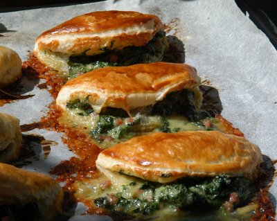

| Zutaten für 4 Personen: | |
| 500 g | frischer Spinat |
| 1 | grosse Zwiebel |
| 2 | Knoblauchzehen |
| 2 El | Butter |
| Salz | |
| schwarzer Pfeffer | |
| Muskat | |
| 200 g | Appenzeller Käse |
| 1 Paket | rechteckig ausgerollter Blätterteig |
| 1 | Eigelb |
| 1 El | Milch |
Den Spinat gründlich waschen. Tropfnass in eine Pfanne geben und nur so lange dünsten, bis er gerade zusammengefallen ist. In ein Sieb abschütten und gut ausdrücken.
Zwiebel und Knoblauchzehen schälen und fein hacken. In der heissen Butter andünsten. Den Spinat beifügen und kurz mitdünsten. Mit Salz, Pfeffer und Muskat würzen. Gut auskühlen lassen.
Den Käse fein reiben und mit dem Spinat mischen.
Aus dem Blätterteig 8-10 Rondellen von etwa 10 cm Durchmesser ausstechen. Jeweils auf die eine Hälfte der Rondellen etwas Spinat-Käse-Masse geben. Die Teigränder mit Wasser bepinseln und die andere Teighälfte über die Füllung schlagen. Die Ränder gut andrücken.
Die Krapfen auf ein mit Backpapier belegtes Blech geben. Eigelb und Milch verrühren und die Krapfen damit bestreichen. Auf der zweituntersten Rille des auf 220°C vorgeheizten Ofens etwa 20 Minuten goldbraun backen.
Werbebroschüre für Appenzeller Käse, 2005
Am 28.10.2005 war das Ergebnis nicht umwerfend. Der Spinat war dominant im Geschmack im heissen Zustand. Kalt waren die Krapfen dann besser. Nur, wo bleiben die Speckwürfeli? Wieder mal ein krankhaft vegetarisches Menü!
Die Zubereitung war auch heikel. Der vorgewallte Blätterteig war gar nicht so einfach zu schönen Krapfen zu falten. Ich verwendete 400g Tiefkühlspinat statt 500g frischen und hatte zu viel Füllung. RE
Am 12.9.2010 für das Foto zubereitet. Man sieht was passiert wenn man die Deckel nicht sauber andrückt und grosszügig Füllung hinein gibt... Mit Schinkenwürfeln und der doppelten Menge Appenzeller "Extra" schmeckten die Krapfen ganz passabel. RE
@LINKBACK_TAG@ @WAKELOCK@